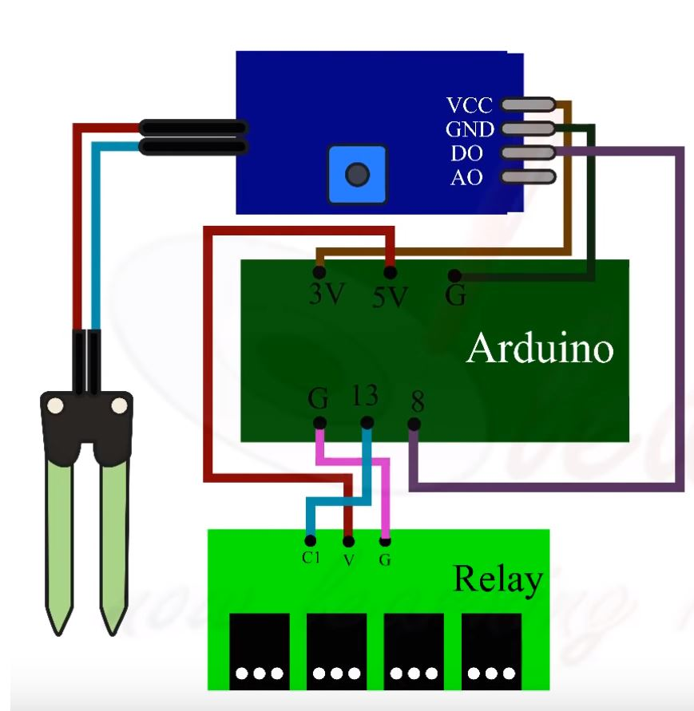

Automated Water Conservation System
Using Arduino, a relay, humidity sensors, soil moisture sensors, temperature sensors, light intensity sensors, and a data logging shield, I built an automated water conservation system that watered a garden in the most environment-friendly and healthy manner.